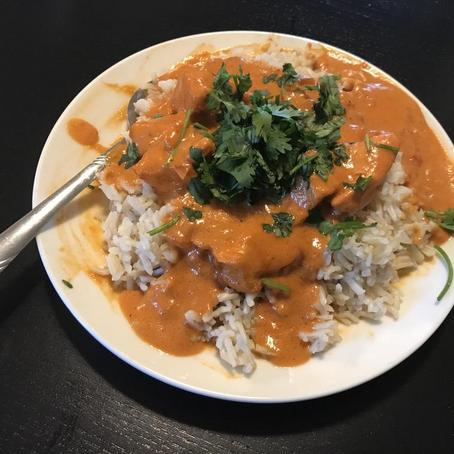

The sauce is perfect when creamy and not too thick or too thin. The level of salt and spices can be suited to your taste. Garam and tandoori masala can be found in the ethnic aisle of your grocery store.
Butter Chicken
Ingredients
- 1 cup butter, divided
- 1 onion, minced
- 1 tablespoon mixed garlic
- 1 (15 ounce) can tomato sauce
- 3 cups heavy cream
- 2 teaspoons salt
- 1 teaspoon cayenne pepper
- 1 teaspoon garam masala
- 1 1/2 pounds skinless, boneless chicken breast cut into bize-sized chunks
- 2 tablespoons vegetable oil
- 2 tablespoons tandoori masala
Instructions
- Step One
- Preheat oven to 375 degrees F (190 degrees C).
- Step Two
- Melt a few tablespoons of butter in a skillet over medium heat. Stir in onion and garlic, and cook slowly until the onion caramelizes to a dark brown, about 15 minutes.
- Step Three
- Meanwhile melt the remaining butter in a saucepan over medium-high heat along with the tomato sauce, heavy cream, salt, cayenne pepper, and garam masala. Bring to a simmer, then reduce heat to medium-low; cover, and simmer for 30 minutes, stirring occasionally. Then stir in caramelized onions.
- Step Four
- While the sauce is simmering, toss cubed chicken breast with vegetable oil until coated, then season with tandoori masala and spread out onto a baking sheet.
- Step Five
- Bake chicken in preheated oven until no longer pink in the center, about 12 minutes. Once done, add the chicken to the sauce and simmer for 5 minutes before serving.
Recipe and photo taken from Allrecipes.com
Back to homepage